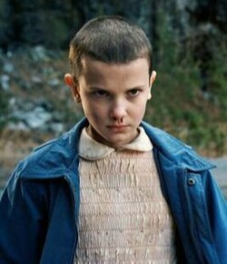
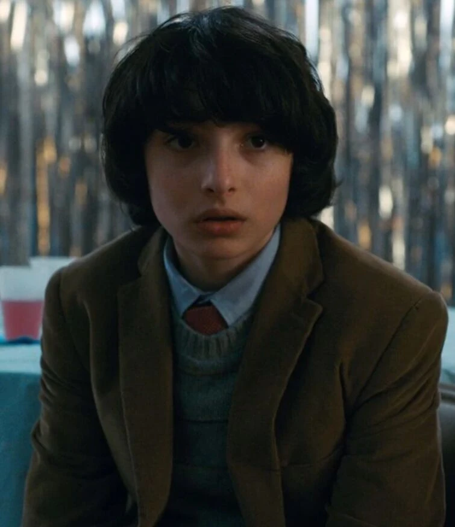
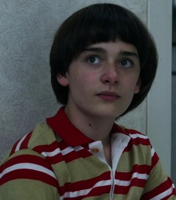
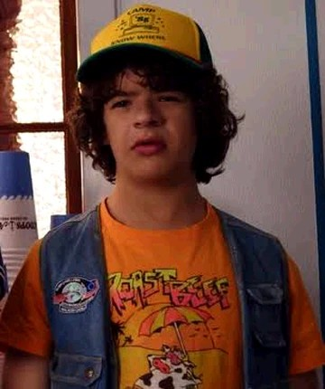
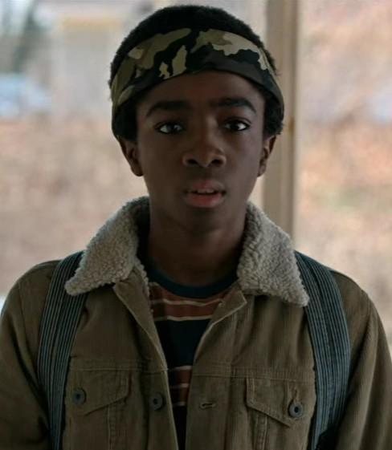
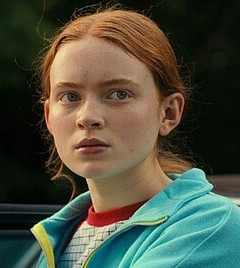

Personagens Principais
Conheça os heróis de Hawkins

Eleven
Eleven é uma garota misteriosa com poderes psicocinéticos extraordinários. Após fugir de um laboratório secreto, ela encontra em seus amigos uma nova família e passa a lutar contra as criaturas do Mundo Invertido.

Mike
Mike Wheeler é o líder do grupo de amigos. Inteligente, corajoso e leal, ele nunca desiste de proteger as pessoas que ama, principalmente Eleven e seus amigos.

Will
Will Byers é o garoto que desaparece misteriosamente no início da história. Sua conexão com o Mundo Invertido faz dele uma peça importante nos eventos sobrenaturais que acontecem em Hawkins.

Dustin
Dustin Henderson é divertido, carismático e apaixonado por ciência e tecnologia. Seu jeito engraçado e inteligente ajuda o grupo a enfrentar diversos perigos.

Lucas
Lucas Sinclair é determinado, corajoso e muito protetor com seus amigos. Mesmo sendo desconfiado em alguns momentos, ele sempre está pronto para lutar pelo grupo.

Max
Max Mayfield é aventureira, independente e adora skate e videogames. Sua personalidade forte conquista o grupo rapidamente enquanto ela enfrenta os perigos de Hawkins ao lado dos amigos.